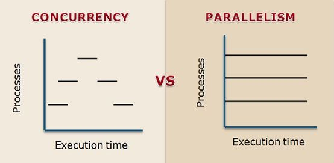

Contents
- Why learn
Go Goselling pointsGovs `Python``- Concurrency vs parallelism
- Conclusion
Why learn Go?
- Great for backend development
- Maintained by Google, great support in Google Cloud Platform
CoopXpreferred language
(together withPython)- Powerful concurrency tools
- Relatively easy to learn
- Learning another language is likely to make you a better
Pythonprogrammer.

Go selling points
Ambitions / Design goals
- Onboard new developers quickly
- Imperative (familiar to most)
- Easy-to-read syntax
- Good choice for large software projects
- Simple, small, “boring” language
- Powerful developer tooling
- Fast execution, low memory footprint
- Runs natively on any platform
- Cross compiles with is own runtime embedded
Static type checking
python is duck-typed by nature, but mypy can help.
class Logic:
def process(self, data):
# business logic
def program(logic):
# get data from somewhere
logic.process(data)
lgc = Logic()
program(lgc)
go uses interfaces instead of classes. No inheritance.
type Logic interface {
Process(data string)
}
func program(l Logic) {
// get data from somewhere
l.process(data)
}
//Any type implementing a Process
//method complies with Logic interface
type lgc struct {}
// Implement method Process on lgc
func (lg log) Process(data string) {
// business logic
}
// Compile time error if not `lgc`
// implements the Process method!
program(lgc)
Compile time
Blazingly fast compiler
Compared to “all” other compiled languages, like Java, C, C++, Rust
Enables rapid prototyping and development

Go is fast
Comparable to Java and C.
No need for “glue code”, to faster languages.
“Pure” Python is slow in comparison, but calling C/C++ code with e.g. numpy or pyTorch gives comparable speeds.
Go is small, simple, “boring”
From the Zen of Python:
There should be one - and preferably only one - obvious way to do it.
But Python has become a large language, not really conforming to this goal.
Go, however, seems much closer to such a goal.
- deliberately small (only 25 keywords)
- standard formatting tool gofmt
Go is small, simple, “boring” example
Square a list of integers and find the sum.
python
l = [1, 2, 3, 4, 5]
s0 = 0
for x in l:
s0 += x**2
s1 = sum(x**2 for x in l)
from functools import reduce
s2 = reduce(lambda x1, x2: x1 + x2,
map(lambda y: y**2, l))
assert(s0 == s1 == s2)
go
l := []int{1, 2, 3, 4, 5}
func sumOfSquares(nums []int) int {
sum := 0
for _, num := range nums {
sum += num * num
}
return sum
}
s0 := sumOfSquares(l)
//Simplified: This is THE way to do it.
Go vs Python
Why and when would you consider using Go instead of Python?
- speed (compare with Python)
- concurrency (compare with Python)
- Concurrency vs Parallellism
Go vs Python - data science
- The Data Science tooling of
Gois immature- And is probably not as well suited language as
PythonandRfor most data science work.
- And is probably not as well suited language as
- No REPL, i.e. no notebooks
Bottom line: Not really the language I’d choose for data science.
Go vs Python - concurrency
Python has a major design “flaw” wrt. concurrency and parallelism: the Global Interpreter Lock (GIL). Concurrent and parallell computations in Python has to “hack” it’s way around this limitation, or call another language (like PyTorch does).
Go, on the other hand, is designed for concurrency. It’s easy to use, and compiler will help you catch race conditions.


Concurrency vs Parallelism
Concurrency: useful when functions are IO or CPU bound.
E.g. making an REST API request, which is usually IO bound. If not concurrency enabled, IO bound means the CPU has to wait for the returned data before it can proceed. This is the general case in Python.
In Go it is very easy to make hundreds of thousands of concurrent goroutines!
Go vs Python - generics
python
def concat(a, b):
return a + b
concat(1, 2) # 3
concat("a", "b") # "ab"
go
func concatString(a, b string) string {
return a + b
}
func concatNums(a, b int) int {
return a + b
}
// Must be implemented for all types!
Until now, Go 1.18 will be released in February with Generics.
Show some code!
Go vs Python - interop
Go has full C interop support
You can compile Go code to a C binary, which one could easily call from Python. See e.g. this blog post for how one could do it.
Use cases:
- Use
Gofor concurrency, e.g. scrape thousands of web pages quickly. - Use
Gofor parallell computations. - Use
Pythonfor anything data science, in aGoAPI.
Conclusion
Should you learn Go? Not sure :D
If you like to learn more programming, go for it! It’s a nice, useful language.
SQL, Python, and potentially R, is more relevant for data science/analytics.
References:
- Book: Learning Go